“My Hair Was My Identity”: Former Broadway Actress Opens Up About the Midlife Hair Loss — And the 10-Second Ritual That Helped Her Get It Back
Discover how a former Broadway child actress went from the spotlight to hiding completely — because of her hair.
There’s a wall in Melissa Hartley’s acting studio that her students ask about constantly.
It’s covered in framed playbills and black-and-white headshots from the late 1980s.
A little girl with an enormous head of dark curls, grinning under a Broadway marquee.
“Miss Melissa, is that really YOU?” they ask.
“Look at your HAIR!”
For most of her life, that question made her smile.
For the past two years it made her want to cry.
“I never imagined I’d lose the main thing that made me me,” says Melissa, 52, from her studio in Westerville, Ohio.
“I spent my childhood being known for my hair. And I spent my forties watching it leave.”
The Curls That Booked Broadway at Age 9: How Melissa’s Hair Became Her Calling Card
The wall Melissa’s students ask about. Credit: U.S. Wellness Report
Before she was a mother of two and one of central Ohio’s most sought-after youth acting coaches.
Melissa Hartley was a working Broadway kid.
She booked her first national tour at nine. By eleven she was on Broadway, eight shows a week — one of those child performers whose playbill bio ran longer than some of the adults’.
And everyone who worked with her says the same thing about what set her apart in audition rooms:
“The curls. Before the voice, before the reading — the curls.”
“Casting directors literally wrote it on my audition cards. My mother called my hair my calling card.”
“It photographed like a costume piece. They never had to wig me.”
Melissa’s childhood headshot. “They never had to wig me.” Courtesy of subject
At 24, she made a decision she says she has never once regretted.
She left the business. Moved home to Ohio. Got married. Raised two kids. Eventually she opened a small studio, coaching the next generation of theater kids.
The curls came with her. Through two pregnancies. Through her thirties. Through her forties.
The curls came with her. Courtesy of subject
“My hair was my identity. It’s what I was known for — literally, professionally, since I was nine years old.”
“I’m not a vain person. I left show business, for heaven’s sake.”
“But my hair? That was the last piece of that little girl I got to keep.”
Which is why what started happening two years ago frightened her more than she let anyone see.
The Scary Moment Melissa Realized She Was Losing Her Hair
“It wasn’t just the drain. It was the brush, every single morning.” Credit: Melissa Hartley
It began quietly.
A few extra strands wrapped around the brush.
A little more in the shower drain.
Hair on her pillow.
Then her part started widening.
“I’d stand under the bathroom light and just stare,” she says.
“Every month there was a little more scalp showing through. It was like watching a crack spread across a wall.”
She managed to explain it away — stress, the studio’s recital season, her age.
Until last spring, when a photographer shot her students’ showcase from the balcony.
The gallery went out to all the families.
Melissa was in the front row of one photo, seen from above.
“I remember thinking, who is that poor woman? You could see straight through to her scalp.”
“And then I recognized my own blazer. That woman was me.”
A zoomed-in look at the photo from the showcase gallery. Courtesy of subject
The worst morning came a few weeks later.
After washing her hair, she gathered the loose strands the way she always did.
And froze.
“It wasn’t strands. It was a clump. Like something out of a clogged drain.”
“Those were MY curls, sitting in my hand.”
“I took a photo of it because I didn’t think anyone would believe me. That photo ended up mattering more than I could have guessed.”
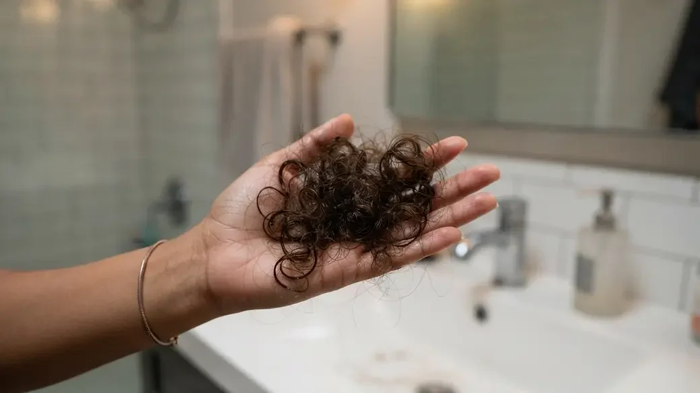
The photo Melissa took after one wash — “I didn’t think anyone would believe me.” Credit: Melissa Hartley
From Broadway to Total Hiding
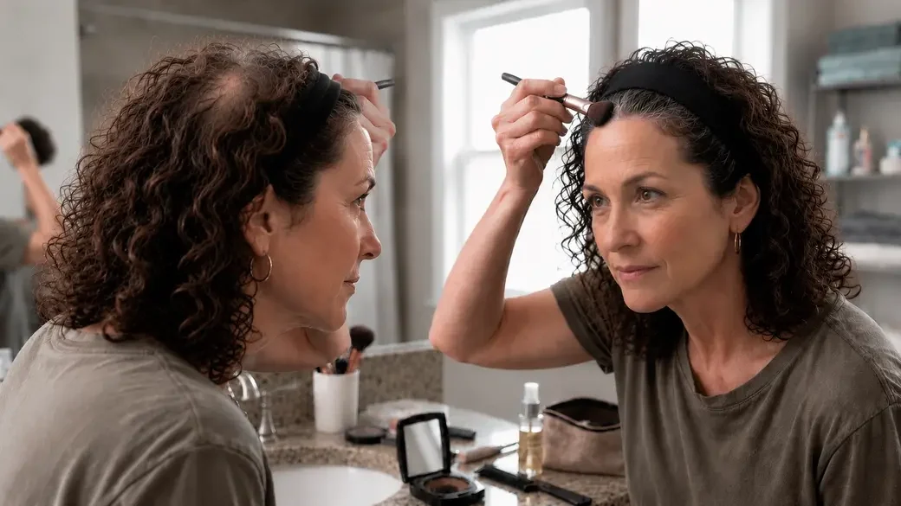
Headbands, scarves, root powder — the daily routine nobody saw. Credit: U.S. Wellness Report
Cruel irony took a Broadway kid and turned her into a woman who spent two years hiding.
It started with one wide headband.
Then it was two. Then a drawer.
Then a scarf, because a scarf covers more than a headband does. Then another scarf. Then a collection of them hanging on the back of her closet door — thirty, maybe more, most of them in colors she never would have chosen for herself.
“I owned scarves I actively disliked. I bought them anyway.”
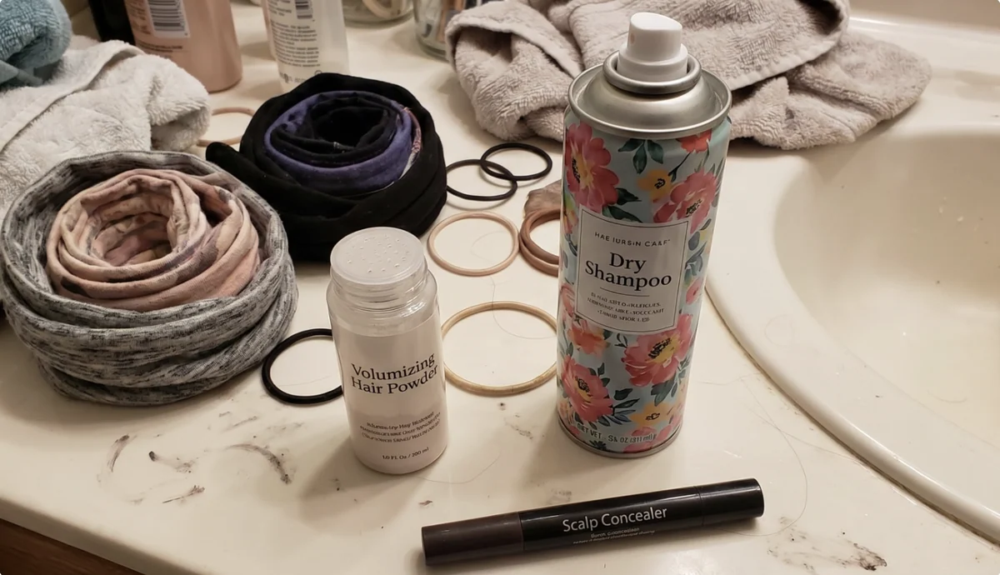
Thirty scarves, most in colors she’d never have chosen. Credit: Melissa Hartley
She stopped wearing her hair down entirely.
Every style she wore for two years was engineered around one job: don’t let anyone see the part. A low bun, twisted so the widest section sat underneath. A deep side part dragged over from almost above her ear. Braids she’d never worn in her life, because a braid breaks up the line where the scalp shows.
She bought root touch-up powder in three shades and kept a compact in her purse, in her car, and in her desk at the studio.
25 minutes, she says. That’s what getting ready took by the end. Not to look nice. To cover.
Then the calculating started.
She learned which side of a room to stand on. She’d walk into a restaurant and scan for the ceiling lights before she scanned for the table, because overhead light was the enemy — it goes straight down through a part and lights up the scalp underneath.
She stopped swimming with her kids.
She started checking the weather for wind the way other people check it for rain.
She turned down the front passenger seat on sunny days.
And the woman who spent her childhood in front of two thousand people a night began dodging photographs at her own studio — volunteering to hold the camera, stepping behind the group, finding a reason to be busy when the families lined up after a show.
“I come across as very confident. I’ve been performing confidence since I was nine.”
“But behind closed doors this was taking an enormous toll — and nobody got to see that. I made sure of it.”
“The awful part is how normal it becomes. You don’t wake up one day and decide to hide. You just add one more small thing, and then one more, and then one day you realize your entire morning is built around a secret.”
Melissa knew this wasn’t normal. So she went to medicine, hoping this would finally be solved.
A 90-Second Diagnosis That Sent Melissa Looking For the Real Answer To Her Hair Loss
What Melissa drove home with. Credit: Melissa Hartley
Her doctor ordered bloodwork.
Thyroid: normal. Iron: normal. Everything: normal.
The verdict took about 90 seconds:
“You’ve hit 45. And you’re in perimenopause. This is normal.”
She prescribed topical minoxidil, with one warning that made Melissa hesitate.
“You’ll need to use the treatment forever. Because there’s nothing else to be done in your case.”
“I sat in the parking lot holding a minoxidil prescription thinking — this is it? Either I rub a drug into my scalp for the rest of my life, or I learn to collect scarves and wear a wig?”
So she did what millions of women do.
She tried everything else.
Biotin gummies, religiously, for eight months.
Collagen powder in her coffee.
Rosemary oil, because a video with four million views said to.
A $60 “thickening” shampoo. A volumizing spray that made her hair smell like a salon and look exactly the same.
“My bathroom counter looked like a pharmacy,” she says.
“And my bun kept getting smaller anyway.”
“My bathroom counter looked like a pharmacy.” Credit: Melissa Hartley
The 11PM Facebook Post That Drew 400 Comments Overnight (And the Comment From a Dermatologist That Explained What No Doctor Could)
11PM. The post she almost deleted. Credit: U.S. Wellness Report
Last fall, Melissa joined a private Facebook group for women navigating menopause.
For weeks she only read other people’s posts.
Then one night — “11 o’clock, sitting in bed, feeling about as low as I’ve ever felt” — she posted two photos side by side.
Her childhood headshot.
And the clump of curls in her open palm.
The caption: “This used to be who I am. Is this normal? I’m scared and I don’t know who else to ask.”
She almost deleted it.
Then she fell asleep.
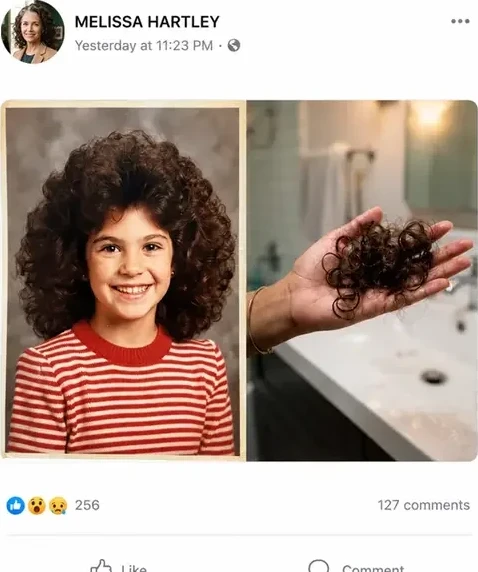
The post that changed everything. Credit: Melissa Hartley
By morning, there were over 400 comments.
“I sat in bed reading them for an hour with my hand over my mouth.”
“Women posting their own drain photos. Women saying they cried at the salon, stopped swimming, stopped letting their husbands touch their hair — just like me.”
“I spent my whole childhood being looked at, and I’d never felt so seen.”
“I thought I was the only one. There were hundreds of us in one thread.”
And scattered through those comments, Melissa noticed something else.
The same explanation kept coming up, over and over — usually from women who had already come out the other side.
One comment in particular was so specific that Melissa copied the whole thing into the notes app on her phone.
It was from a dermatologist.
“Honey, your hair isn’t the problem. It’s what’s underneath it. And nothing you put ON TOP of your scalp is going to fix it.”
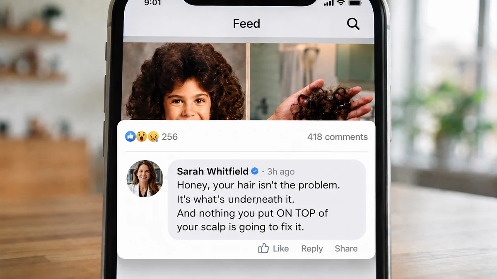
The comment Melissa saved to her notes app.
Melissa went and looked at the profile.
Dr. Sarah Whitfield. Dermatologist. 22 years in practice, more than 12,000 patients, and a decade with a closed schedule and a four-month waiting list.
Dr. Sarah Whitfield — 22 years in practice, more than 12,000 patients. Credit: U.S. Wellness Report
Melissa sent a direct message assuming she’d never hear back.
Dr. Whitfield answered in forty minutes.
And offered a video call on Saturday morning.
The Secret Exposed: Why Biotin, Collagen, Rosemary Oil and Minoxidil All Fail at the Same Step
Saturday morning, 9 a.m., Melissa sat at her kitchen table with a coffee and opened the link.
“She shared her screen with me,” Melissa says. “A dermatologist I’d never met in my life, on a Saturday morning, drawing me a hair follicle.”
What Dr. Whitfield explained over the next forty minutes is something Melissa says no doctor had ever mentioned to her — not once, in two years of appointments.
We reached out to Dr. Whitfield afterward and asked her to explain the same thing for our readers.
“For almost your entire life, the hormone that protected your hair and kept it thick, full and anchored was estrogen,” she says.
“And around age 45, the levels of that hormone begin to drop sharply.”
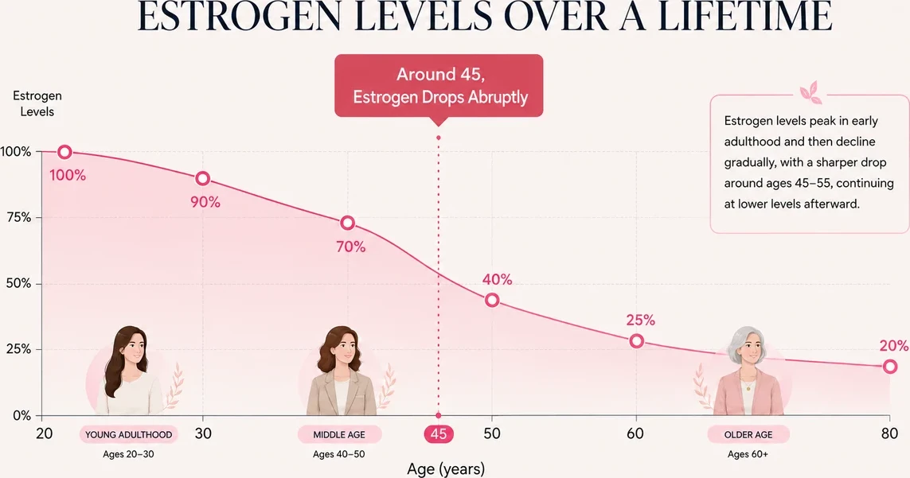
Estrogen protection lifts in the years around menopause. Credit: U.S. Wellness Report
When estrogen starts to collapse, a far more aggressive hormone takes over.
It’s called DHT.
“The hair-killing hormone,” as Dr. Whitfield put it.
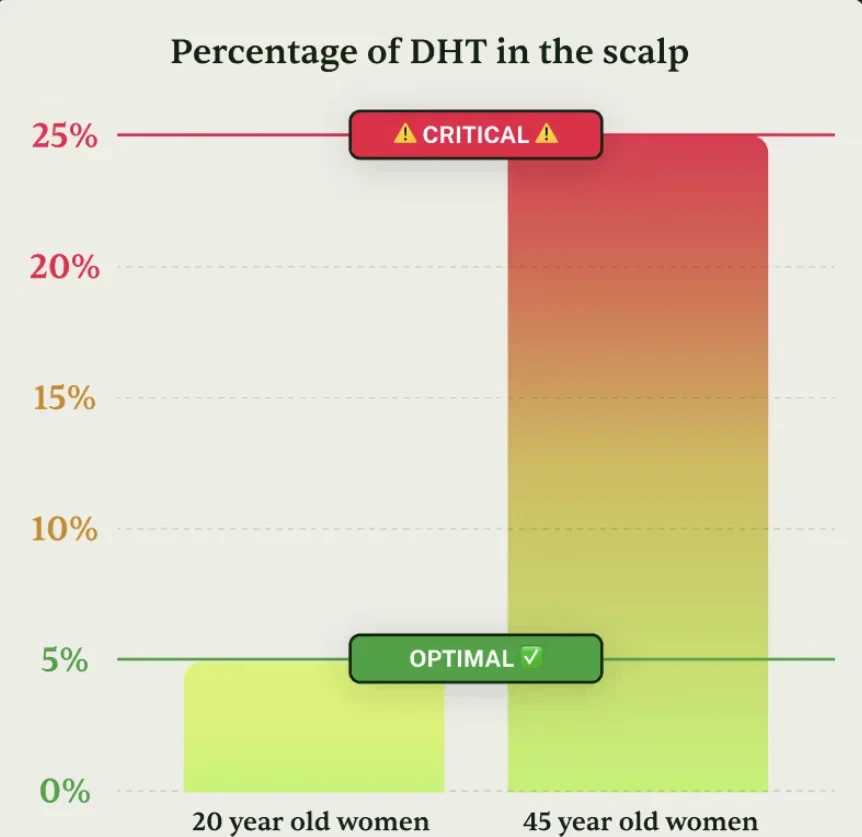
DHT concentration in the scalp climbs from optimal to critical after 45. Credit: U.S. Wellness Report
“Think of DHT like crabgrass in a garden.”
It wraps around the root of every hair, deep under the scalp, and strangles it. It cuts off the blood flow. It cuts off the nutrients.
Strand by strand, it destroys hair from the bottom up.
The strand gets thinner. Then weaker. Then it dies and falls — and nothing grows back to replace it.
That’s what Dr. Whitfield calls:
Hair Collapse.
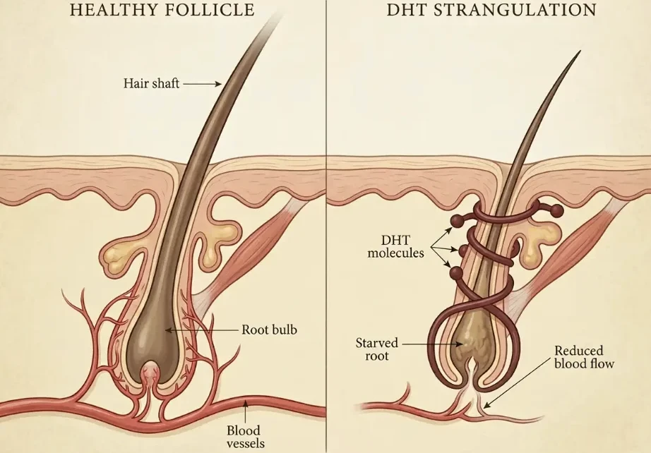
Healthy follicle vs. DHT strangulation — starved root, reduced blood flow. Credit: U.S. Wellness Report
Your hair isn’t “thinning with age.” It’s being suffocated and destroyed from below, where you can’t see it.
“She said that sentence and I had to put my coffee down,” Melissa says.
But then came the part Melissa says she’ll never forget.
“The root isn’t dead. Not yet.”
“It’s being strangled. And the moment you free that root from DHT, it can come back to life — and grow hair again.”
And it doesn’t matter, Dr. Whitfield explained, whether you:
Then she pulled up one more slide.
“DHT is acting approximately 4 millimeters below the surface of your scalp.”
It’s the one Dr. Whitfield says almost nobody hears.
The Real Problem Is 4 Millimeters Deep.
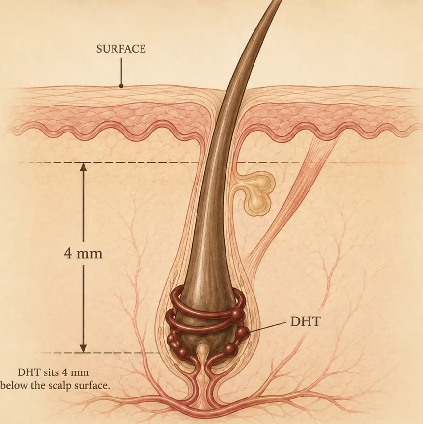
“DHT sits 4 mm below the scalp surface.” Credit: U.S. Wellness Report
This is below everything.
Below shampoo, which is rinsed away in 60 seconds. Below oils and serums, which sit on top of the skin. Below swallowed pills, which the body flushes out within hours.
“I have prescribed nearly everything on that bathroom counter,” Dr. Whitfield says.
“And not one of those things was ever built to travel that deep. They stop at the surface. The problem doesn’t live at the surface.”
“She wasn’t telling me my products were bad,” Melissa says. “She was telling me they were never even in the right room.”
And there’s a second problem stacked on top of the first.
While DHT is strangling the root, the scalp around it quietly degrades too — thinner, drier, less collagen, less circulation, more inflammation.
Which means even when a woman does get some regrowth, it comes up out of ground that can’t support it, and it snaps off before anyone ever sees it.
“So women aren’t failing at fixing their hair. They’re buying surface solutions for a problem that is four millimeters underneath — and then blaming themselves when it doesn’t work.”
The Formula That Finally Matched What Dr. Whitfield Explained, Point by Point.
Near the end of the call, Melissa asked the obvious question.
So what actually reaches four millimeters down?
Dr. Whitfield said there was one ingredient she’d been working with for decades — just never on a scalp.
Copper Tripeptide-1 (GHK-Cu). Credit: U.S. Wellness Report
Its full name is Copper Tripeptide-1 (GHK-Cu).
Not a vitamin. Not an oil. Not a shampoo.
It’s a molecule small enough to pass through the surface of your scalp.
Not sit on it. Not coat it. Through it.
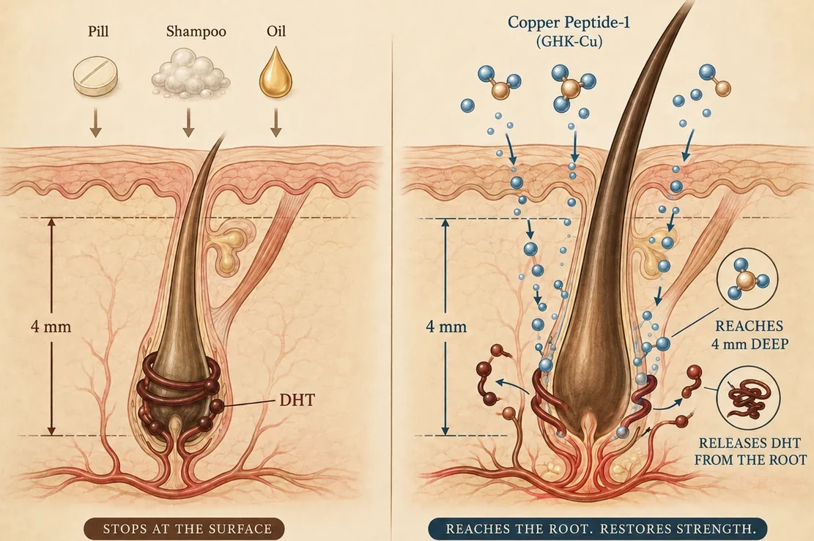
Small enough to pass the surface and travel the full 4 mm. Credit: U.S. Wellness Report
The copper peptide is already well known in dermatology, mainly for one reason: it’s small enough to penetrate where almost nothing else can.
“That’s why it works so well on the face,” she told Melissa.
“Medicine had never looked at GHK-Cu as a solution for hair, since it was classified as a skin ingredient. But the scalp is skin.”
That’s why it can reach so deep, down to where the DHT is.
And once it’s there, it does the one thing nothing on that shelf can do:
It blocks DHT at the root and pries its grip off the follicle.
The blood comes back. The nutrients come back.
And roots that had gone quiet start pushing hair out again — from underneath, not painted on top.
But a copper peptide on its own was still only one piece.
Because freeing the root doesn’t help if the ground above it can’t hold what grows.
So she built it into a complete system — with 4 clinically-backed ingredients.
She Called It Crowned®.
A lightweight scalp serum built around one job: getting DHT off your roots and keeping it off.
Not a shampoo that rinses away. Not a pill your body flushes in four hours. Not a treatment you can never stop.
2 sprays to the scalp. Morning and night. 10 seconds.
That’s the entire routine.
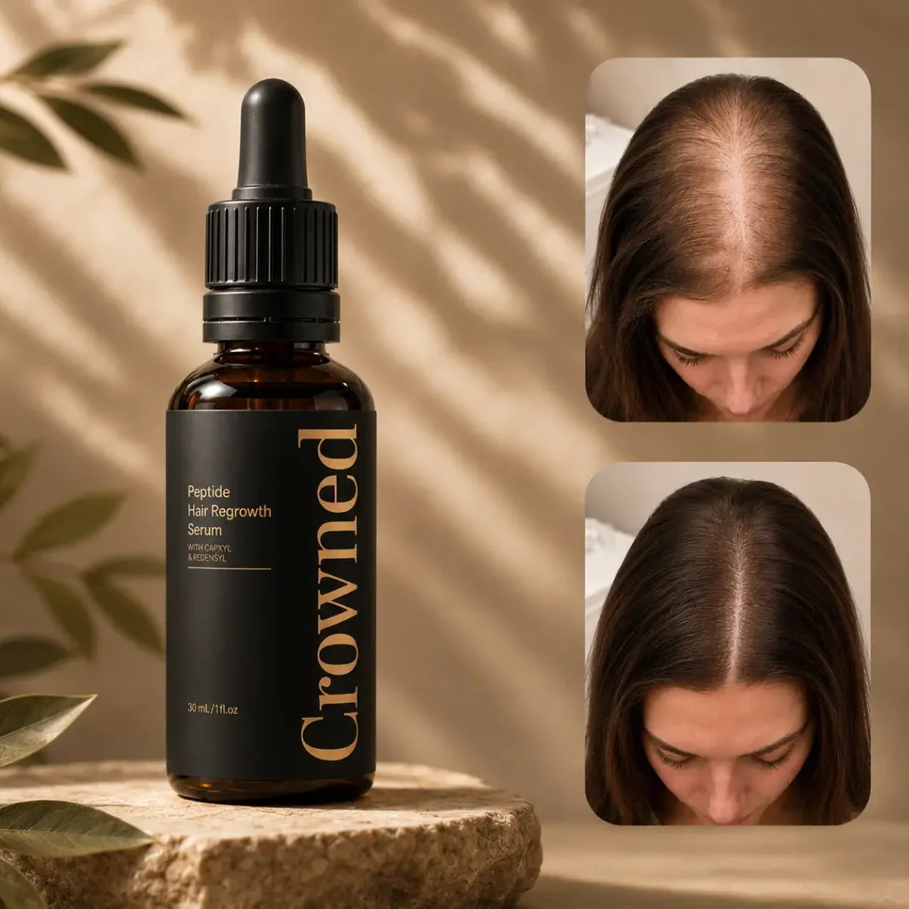
Crowned® Hair Regrowth Serum. Two sprays, morning and night.
The Science Behind Crowned®
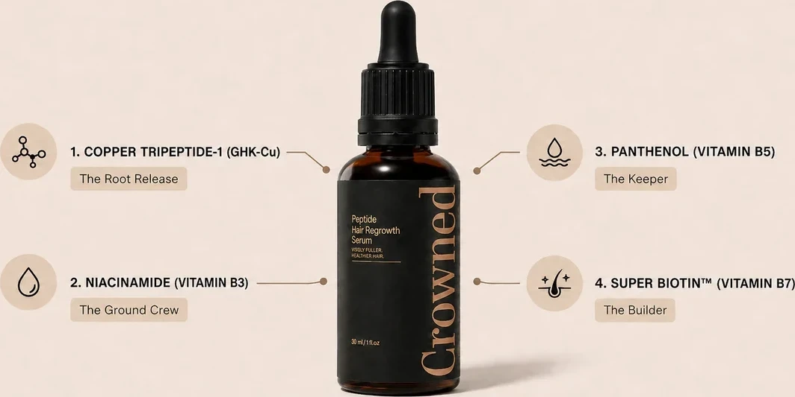
Four ingredients, four jobs. Credit: U.S. Wellness Report
The Crowned® 4-Step Root Rescue
And then, Melissa says, Dr. Whitfield did something that caught her completely off guard.
She got almost uncomfortable about it.
“I want to be very clear with you. I didn’t build this to sell it. I built it because I couldn’t keep telling women there was nothing left to do.”
And then she said: don’t take my word for any of this. You don’t know me. I’m a stranger on the internet who commented on your post.
“Go back to the group you’re already in. Search the word ‘Crowned.’ Read what the women there say. Not what I say.”
So Melissa hung up and did exactly that.
Months of posts, before-and-afters, and strand counts — from women nobody was paying. Credit: Melissa Hartley
“I typed it into the group search bar and I just… sat there.”
Post after post after post. Months of them. Before-and-afters at the part line. Women counting strands in the drain the same obsessive way I did. Women arguing about whether to do two bottles or three.
Some of these threads were a year old. Nobody was selling anything. They were just talking to each other, the way we all had been about our drains and our scarves.
“That’s what got me. Not the doctor. The women who’d already been where I was.”
She had a bathroom counter full of things that hadn’t worked, a prescription in a drawer she’d never filled, and two years of scarves hanging behind her closet door.
“I’d tried everything else. It felt insane not to try the one thing that was actually aimed at the right place.”
She ordered that afternoon.
Melissa’s Hair in 90 Days: The Week-by-Week Timeline of When Her Follicles Finally Got What They’d Been Missing
Day 1 — “the worst photo I’ve ever taken on purpose.” Credit: Melissa Hartley
Melissa took a photo the day the bottles arrived — “the worst photo I’ve ever taken on purpose.”
She parted her hair, held the phone above her head, and pressed the button.
“Thirty years of headshots, and that’s the one that mattered most.”
Here’s her timeline, in her words:
Weeks 1–2: “Six Strands After a Wash. I Used to Lose a Clump.”
“The first thing that changed was the drain.”
“I counted — I know how that sounds, but every woman reading this understands.”
“Six strands after a wash. Six. I used to lose a clump.”
“I stood in the shower laughing like a crazy person.”
“Six strands. I used to lose a clump.” Credit: Melissa Hartley
Weeks 3–4: The Curls Start Holding Their Shape Again (And the Broken Hairs on Her Cardigan Disappear)
“My hair started feeling different before it looked different.”
“Stronger between my fingers. The curls started holding their shape again instead of just hanging there.”
“Those broken little pieces on my cardigan — gone.”
Weeks 5–6: “I Called Greg Into the Bathroom” — The Morning the Baby Hairs Showed Up
“I was washing my face and caught my reflection at an angle — and there they were.”
“Tiny baby hairs at my temples, maybe a quarter inch, standing straight up like a little halo.”
“I called Greg into the bathroom. He squinted at my hairline and said: ‘that’s growing in.’”
“I just cried at the sink.”
Week 6 — the baby hairs at the temples Greg confirmed. Credit: Melissa Hartley
Month 3: Curls Out, Under Stage Lights, for the First Time in Two Years
“My part is visibly narrower — I compare it to my day-one photo about once a week.”
“I stopped putting my hair up without even thinking about it. That’s the part I didn’t expect. I just… stopped.”
“And at our spring showcase, I wore my hair down — DOWN, curls out, under stage lights — for the first time in two years.”
“Three people asked if I’d had something done.”
“I said yes. Two sprays a day.”
Month 3 — curls out, under stage lights. Individual results vary.
Melissa’s follow-up posts to the group. Credit: Melissa Hartley
Crowned says Melissa’s timeline tracks with what most women report:
Real Women. Real Results.
Melissa isn’t an isolated case.
We asked Crowned for permission to contact customers directly, and spoke with four women who agreed to share their photos.
Each one had a different reason to believe it wouldn’t work for her.


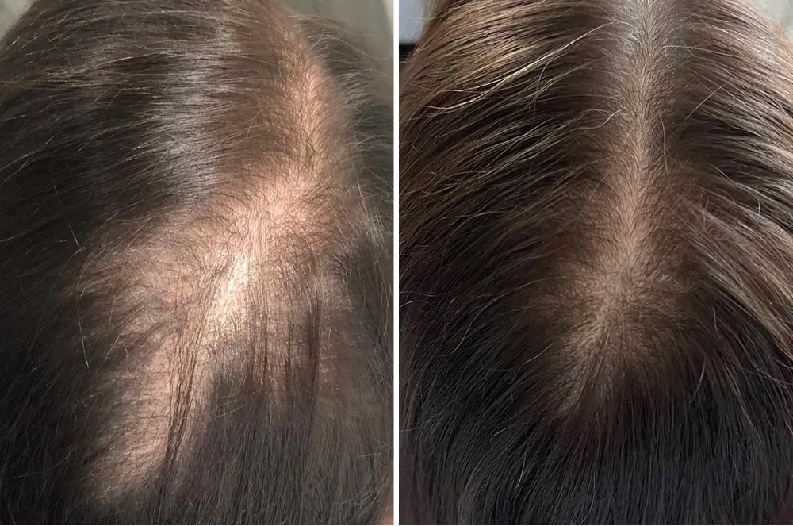

4 Signs This Was Built For a Woman Exactly Like You
We asked Dr. Whitfield who, in her experience, responds best.
She didn’t hesitate.
“It was built for the woman who has already done everything right.”
If you’ve taken the supplements exactly as directed for a year. If you’ve followed the routine, bought the serum, gone to the appointments, and shown up for a treatment plan that never gave you back what it promised — you are the exact person she made this for. Not because you didn’t try hard enough. Because none of it was ever aimed at the right place.
“It was built for the woman whose body changed the rules on her.”
Perimenopause. Menopause. The moment where the same hair you’d had your whole life started behaving like someone else’s. If you can point to roughly when it started and it lines up with your hormones shifting, that’s not a coincidence — that’s the mechanism in this article.
“It was built for the woman who wants out of the rental agreement.”
If you’re on minoxidil and the thought of stopping scares you, you already understand the problem. You don’t want something that holds your hair hostage. You want the thing that’s strangling the root gone.
Who It Is NOT For
Then she said something we didn’t expect from someone who makes the product.
“I’d rather turn a woman away than take her money.”
The True Cost of Not Addressing This Issue
Let’s talk honestly about money.
Not just the price of Crowned. The price of continuing exactly as you are.
PRP injections run several hundred dollars a session, and they want you to do a series.
A transplant costs five figures — and it doesn’t stop DHT. It just moves hair to a place DHT hasn’t reached yet.
Minoxidil is cheap per bottle and expensive forever, because the day you stop is the day it all starts over.
But the quiet expense is the graveyard inside your bathroom cabinet.
- Biotin$40
- A thickening shampoo. Then another one.$32
- A serum you believed worked$68
- The treatment that lasted three washes$200
- A topper you’ve worn twice$180
- Scarves, clips, powders, sprays, and a hat you don’t even like—

Everything that failed, versus the one bottle that goes where the damage is.
For most women, it isn’t one expensive mistake.
It’s $40 here, $60 there, over and over, for years.
And then there’s the cost nobody puts on a receipt.
Twenty-five minutes every single morning. Not to look beautiful — to cover. Do the math on that one. Twenty-five minutes a day is over 150 hours a year. Six full days of your life, every year, spent arranging something to hide something else.
Two years of never wearing your hair down.
Two years of scarves you actively disliked, bought anyway, because they weren’t accessories — they were equipment.
Every photo you volunteered to take so you wouldn’t be in it.
Every time you looked in the mirror and saw a woman ten years older than you are.
And the worst line item of all: another year of waiting to see if it stops on its own.
It doesn’t stop on its own. That’s the entire point of everything you just read. Every morning you wait, DHT is destroying roots that were still alive this month and won’t be next year.
Doing nothing isn’t free.
It’s the most expensive thing you’ve been buying — and you’ve been paying for it every single morning, in front of the mirror, without ever taking out your credit card.
And if the alternative you keep coming back to is minoxidil, here’s the comparison nobody puts side by side.
Crowned® vs. Minoxidil
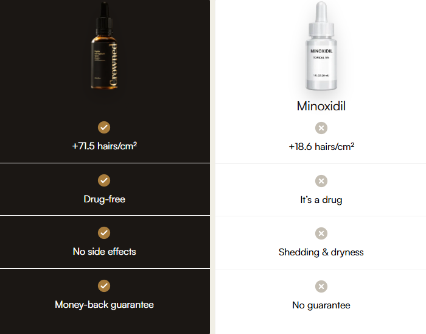
Crowned® against minoxidil, point by point.
- Nearly 4× the regrowth — +71.5 vs +18.6 hairs/cm² in clinical studies.*
- Drug-free — a peptide, not a drug you depend on for life.
- No drug side effects — no shedding phase, no itching, no dryness.
- Risk-free — 90-day money-back guarantee, cancel anytime.
Women have been asking for years for something that does what minoxidil does without being what minoxidil is.
Minoxidil forces a response by widening blood vessels at the surface. It never touches the DHT that’s strangling the root — which is why the shedding comes back the moment you stop, and why you’re on it for life.
Crowned goes after the cause instead. Four millimeters down, where the problem actually lives.
The Real Reason Women Quit
Before you see the offer, Dr. Whitfield asked us to publish something she says most brands would cut.
When Melissa called to say her drain was almost clean, that was real. It was early, and it was real.
But the woman who wore her hair down under stage lights — that was month three.
“Not because the ritual is slow. Because hair grows on a cycle, and your follicles have been running the same instruction for years. A response that’s been repeating that long doesn’t change because you used something for nine days.”
Here’s what actually happens across the four steps.
The copper peptide moves first. Getting DHT off the root is the fastest part, and it’s why the shedding can start easing in the first two weeks. That’s what you notice early.
Then the ground rebuilds. Niacinamide and panthenol work on the scalp itself — thickness, calm, hydration. You feel this before you see it: the itching stops, the tightness stops, the flaking stops. This is what decides whether a new strand survives long enough to be visible.
Then the hair simply has to grow. And this is the part women misjudge, so let’s be exact about it. A freed root doesn’t produce a visible strand overnight. It has to push one out, and then that strand has to get long enough to actually cover something. Hair grows about half an inch a month. That’s not a flaw in the formula — it’s biology, and no product on earth changes it.
Which is why “my shedding stopped” happens in weeks, and “my part line closed” happens in months.

The one line item that actually changes what happens next.
Release. Feed. Hold. Build.
The first signs come quickly. But it’s consistency that brings your hair — and you — back to what it was.
“That’s exactly why the small percentage of women who used Crowned for six weeks felt it wasn’t enough. And why the ones who stopped at week three walked away believing their hair was the problem.”
“They didn’t fail. They left too early.”
So when women ask her how much Crowned to order, she stopped being polite about it.
“Order enough to finish the cycle you start.”
Where to Get Crowned® (And How New Customers Are Claiming 70% Off Before This Batch Sells Out)
Crowned isn’t sold in stores.
Not at CVS. Not at Walmart. Not on Amazon.
It’s available only through the brand’s official website — which, the company says, is how they keep a clinically dosed copper peptide affordable, and how they keep counterfeits off the shelf.
There’s a reason for that last part. Too many knockoffs, too many blue bottles with dye inside instead of peptide. You can’t see the difference. Your follicle can.
Every batch is purity-tested in an FDA-registered, GMP-certified facility.
The 3-bottle kit — the full 90-day cycle. FDA-registered · GMP-certified · Made in USA.
Right now, Crowned is running a new-customer offer, applied automatically at the link below — up to 70% off with free shipping on the full cycle, refills every 30 days, cancel anytime.

Every order is covered by the 90-day money-back guarantee.
But that price is reserved for qualified readers only.
Because here’s the thing: not every head of hair is a match for this protocol.
Here’s how it works.
First, you answer six quick questions so the team can calculate your Hair Collapse Index — the same set of signs you read earlier in this article.
Your age, when it started, how long it’s been going on, and what you’ve already tried.
At the end, you’ll see whether Crowned is right for your hair — and if it is, your reader price and the full-cycle package are unlocked on your result.
WARNING: By The Time You’re Reading This, This Allocation May Already Be Gone
Crowned isn’t made the way trend products get made.
The entire point is a stable copper peptide, at a real concentration, in a format that actually penetrates, batch after batch after batch.
That means production is slower than dumping generic actives into a plastic bottle. Copper peptide has to be handled, stabilized and tested, and there are very few labs in this country capable of doing it.
This batch specifically — the one set aside for this promotional price — is finite. It can’t be topped up because traffic went up. It has to be made, and made properly.
And we’ve already seen what happens when this spreads between women. Melissa told the mothers at her studio. They told their sisters.
The same thing is happening now, at a scale nobody planned for.
If you click and the full-cycle package is still showing, there are units left in this batch. If it’s gone, it’s gone. Nobody here is going to fake a countdown clock and insult your intelligence.
No Change, No Charge.
90-day money-back guarantee.
You’ve been let down before. So the risk comes off you completely.
Use Crowned for a full 90 days. Actually use it. Twice a day.
Watch the early signs first. The brush gets cleaner. The drain gets cleaner. The itching stops. The pillow stops being the first thing you dread.
Then watch the part line.
If the shedding doesn’t slow, if you don’t feel your scalp responding, if you look at your part in the mirror and see exactly what you see today — email or call and ask for your money back.
Empty bottles are fine. No interrogation. Nobody is going to tell you that you “used it wrong.”
And no, this is not the guarantee every other company runs these days.
Want proof it’s real?
Call or email support before you even order anything. You can reach them 24 hours a day, 7 days a week.
You keep the results or you keep your money.
The only thing you can’t do is stay exactly where you are.
Here’s Exactly What Happens After You Click
Answer six quick questions — your age, when it started, how long it’s been going on, and what you’ve already tried.
And whether your scalp is a match for the protocol.
Along with the full-cycle package, if the allocation is still open.
On the secure checkout page.
Apply 1 full dropper daily on the scalp.

One full dropper along the scalp, daily.
Ten seconds a day. Then get on with your life and let the follicle cycle do what it needs to do.
3 Months From Now, You’ll Be Living 1 of 2 Stories
Here’s the truth nobody says out loud.
This doesn’t fix itself because you read one more article about it.
Another shampoo. Another bottle of biotin. Another serum a stranger swore by. Another morning where the brush tells you exactly what it told you yesterday.
But here’s the part worth sitting with, because it’s the part women don’t let themselves think about.
It doesn’t stay the same. It gets worse.
That’s what DHT does. It doesn’t pause while you decide. Every month it’s on a root, that root gets weaker, thinner, and closer to the one thing that can’t be undone — because a strangled root can come back, and a dead one can’t.
So path one isn’t your hair staying like this.
Path one is three months from now, when the part is wider than it is today and you know it, because you measure it every morning in that mirror and you remember exactly what it looked like when you read this.
It’s the scarf drawer. One more added to it.
It’s the twenty-five minutes. Again tomorrow. Again the day after. Six days of your life a year, spent covering.
It’s your body going rigid the next time someone you love reaches for your head.
It’s another summer you don’t get in the water.
It’s the photo you volunteer to take instead of being in.
It’s looking in the mirror at a woman ten years older than you are and slowly, quietly, starting to accept her.
And the worst version of path one is the one where you did start something, and stopped at week three — right before the ground had rebuilt, right before anything would have pushed through — and spent the rest of your life believing you were the exception. That your hair was the problem.
Three months from now, it’s a Saturday morning and you’re standing in the bathroom in that same terrible overhead light.
And you’re not measuring anything.
You wash your hair with your eyes open. You rinse, you step out, and you don’t look at the drain — not because you’re avoiding it, but because it stopped being something you check.
You reach for the brush and you use it the way you used it at 25. One stroke. Another. Nothing to clean.
You’re out the door in ten minutes because there’s nothing to arrange. No scarf. No clip. No powder. No part dragged over to the other side. Your hair is down, on purpose, in daylight, and you’re not thinking about it at all.
That’s the part that surprises women the most. Not the mirror. The silence.
The voice in your head that has spent two years narrating your hair — is it worse today, is that light bad, will they notice, should I stand somewhere else — just isn’t talking anymore.
You walk into a room and stand wherever you want.
Your hairdresser lifts a section, stops, and asks what you’ve been doing.
Someone you love puts a hand on the back of your head and you lean into it, without a single thought, for the first time in years.
And that night you’ll catch a photo of yourself that somebody else took, and you’ll look at it and think: there I am.
Not younger. Not fixed. You. The one you were before all this started.
Hair down, on purpose — and the one bottle that got her there.
That’s not vanity.
That’s you, coming back.
Now you get to decide whether you keep managing this — or finally test the one thing that goes where the damage actually is, without carrying any of the risk.
Answer the six questions below. Your result is ready in under a minute.
So Where Does That Leave You? Melissa’s Advice to Every Woman Still Staring at Her Shower Drain (Friend to Friend)
Melissa speaking with our reporter from her studio in Westerville, Ohio. Credit: U.S. Wellness Report
Before we ended our conversation, we asked Melissa what she’d say to the woman she was two years ago.
The one hiding under headbands, googling wigs at midnight.
She answered like the coach she is.
“You have two choices, and I made the wrong one for two years.”
“You can keep buying one more bottle of the same thing. Keep standing at the back of photos. Keep telling yourself you’ll figure it out next month.”
“Your hair will be thinner next year than it is today — mine was.”
“Or you can take the photo, take the ten seconds, and give it 90 days. You’re protected either way.”
“The only thing I actually risked by trying was staying exactly where I was.”
“I teach kids that the scariest part of any show is the moment before you walk on. This was mine. Walk on.”
“The scariest part of any show is the moment before you walk on.” Credit: U.S. Wellness Report
Crowned is produced in small batches to preserve copper peptide stability, and the formula has sold out three times this year. When it does, restocking takes weeks. At time of publishing, Crowned was in stock.
1. Pickart & Margolina (2018). Int J Mol Sci — Regenerative and protective actions of the GHK-Cu peptide.
2. Pickart et al. (2015). Oxid Med Cell Longev — GHK-Cu and tissue remodeling.
3. Trüeb (2018). Int J Trichology — Oxidative stress and the aging hair follicle.
4. Gasmi et al. (2023). Int J Mol Sci — Niacinamide in dermatology and barrier function.
5. Stettler et al. (2021). Skin Pharmacol Physiol — Panthenol and skin barrier hydration.
6. Yelich et al. (2024). J Clin Aesthet Dermatol — Systematic review of biotin for hair growth.
7. Grymowicz et al. (2020). Int J Mol Sci — Hormonal effects on hair follicles.
Comments (1,342)